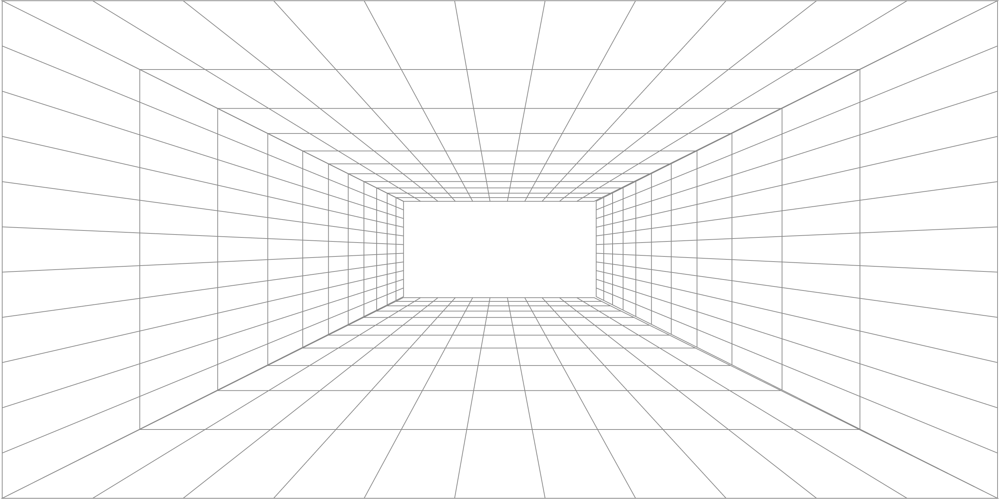

TRANSFORMAMOS DADOS HUMANOS EM SOCIEDADES SINTÉTICAS PARA TESTAR DECISÕES ANTES DA EXECUÇÃO.
Antes de decidir, simule.
A BEHAVIORAL SIMULATION METHOD FOR STRATEGIC DECISION-MAKING.
UM LABORATÓRIO DE SIMULAÇÃO E INFERÊNCIA COMPORTAMENTAL.
BEM-VINDO À ERA DA SIMULAÇÃO COMPORTAMENTAL.
O GRANOVETTER TRANSFORMA DADOS CULTURAIS, HUMANOS E CONTEXTUAIS EM SOCIEDADES ORGANIZACIONAIS SINTÉTICAS — POVOADAS PELOS NOSSOS AGENTES SINTÉTICOS — CRIADAS PARA TESTAR COMO GRUPOS REAIS REAGEM A DECISÕES, CRISES, MUDANÇAS E TENSÕES ESTRATÉGICAS. NÃO SIMULAMOS INDIVÍDUOS ISOLADOS. SIMULAMOS SISTEMAS HUMANOS EM INTERAÇÃO.
Toda decisão desencadeia reações em um sistema humano antes de virar resultado.
Entre a intenção e a execução há pessoas. Há comportamento.
O Granovetter simula esses comportamentos para antecipar resultados, mostrando quais cenários têm maior chance de gerar o melhor retorno e quais riscos podem comprometer tempo, dinheiro e confiança.
Simule cenários críticos antes que uma decisão custe caro demais.
O Granovetter reduz o custo de decidir errado.
Criamos o grano.protocol, um método de simulação comportamental baseado em inteligência artificial e ciência aplicada para transformar decisões estratégicas em cenários testáveis.
Simular comportamento é apenas o meio. O fim é mostrar quais caminhos geram o melhor resultado antes que a decisão consuma tempo, dinheiro e confiança.
Risco de decisão
Qual caminho tende a funcionar melhor antes de implementar.
Risco de adesão
Quem tende a comprar, resistir, distorcer ou ignorar a decisão.
Risco de execução
O que pode comprometer produtividade, foco, colaboração e velocidade.
Risco cultural
Se a decisão reforça ou enfraquece confiança, clima, pertencimento e abertura à mudança.
Risco reputacional
Ruídos, cinismo, narrativas paralelas e desgaste da liderança.
Comportamento humano não é aleatório. É complexo, mas inferível.
Humanos seguem padrões. Grupos convergem, resistem, imitam, polarizam e se reorganizam.
Em uma organização, o comportamento coletivo não é a soma de opiniões individuais. É uma dinâmica emergente, moldada por cultura, contexto, ambição, confiança, medo e pressão social.
É por isso que empresas podem ser simuladas: para antecipar padrões, tensões e riscos antes de chegarem à execução.
Sobreposição média entre simulação sintética e pesquisa tradicional.
Comparações diretas validando a precisão da inferência sintética.
AI Behavioral Science é a convergência entre ciência comportamental, sistemas complexos e inteligência artificial generativa.
Me chamo Dheiver Santos, PhD.
Sou fundador do Granovetter.
Engenheiro de machine learning e pesquisador de IA, doutor em Engenharia Química com ênfase em Inteligência Artificial (UFBA/UFRJ), com pós-doutorado na UNICAMP/UNIT (CNPq) e na UFAL (FUNDEPES). Minha trajetória foi forjada em cargos seniores na indústria, como Senior Staff Machine Learning Engineer na SX Negócios e Cientista Sênior no Grupo Boticário, e em sala de aula, como professor de IA, sistemas distribuídos e ciência de dados na UPE e na Estácio.
Criei o Mangaba.AI, framework open-source para equipes de agentes autônomos de IA, e fundei a Cognai, healthtech que aplica IA à cardiologia.
Minha produção acadêmica abrange machine learning e computação neuro-simbólica: mais de 200 artigos, 550+ citações, h-index 12, uma patente no INPI e 10 produtos de IA entregues em fluxos clínicos e operacionais reais.

O grano.protocol transforma decisões estratégicas em simulações comportamentais.
Da decisão ao comportamento coletivo
grano.protocol
Publicado por
Cada simulação começa com a construção de agentes sintéticos baseados em perfis reais da organização: cultura, contexto, demografia, território, histórico e tendências comportamentais.
Depois, esses agentes são expostos a cenários críticos, decisões e variáveis estratégicas. Primeiro respondem individualmente. Depois interagem com o coletivo, ajustando posições, resistindo, aderindo ou amplificando narrativas.
O resultado não é uma previsão única. É uma distribuição de cenários, riscos e probabilidades para apoiar decisões antes da execução.
Agentes sintéticos
Perfis representativos baseados em grupos reais da organização.
Ambiente organizacional
Cultura, contexto externo, liderança, pressão social e momento da empresa.
Projeção individual
Cada agente reage ao cenário antes de conhecer o grupo.
Interação coletiva
Os agentes confrontam respostas, narrativas e pressões sociais.
Síntese probabilística
O sistema revela cenários prováveis, riscos emergentes e caminhos de decisão.
Entrada→Simulação→Saída
O Granovetter recebe dados reais da organização, transforma decisões estratégicas em cenários simuláveis e entrega inferências comportamentais para apoiar a decisão antes da execução.
Entrada
Dados culturais, perfis de grupos, contexto organizacional, ambiente externo e decisão a ser testada.
Simulação
Agentes sintéticos interagem com cenários, pressões, narrativas e variáveis estratégicas.
Saída
Cenários prováveis, riscos emergentes, tensões ocultas, padrões de adesão, resistência e recomendações para decisão.
O motor é open source.
Cada agente sintético representa um grupo real da organização, com valores, tolerância a risco e narrativa próprios. Na rodada 1, cada agente reage sozinho. A partir da rodada 2, é exposto ao consenso e às posições contrárias do grupo. A análise mede adoção, resistência, conformismo e ansiedade, e localiza o ponto de virada.
Simulação não é previsão. É apoio à decisão, e deve ser validada com dados reais da própria organização.
Exemplo incluído no repositório, com organização fictícia: migrar 350 pessoas para trabalho 100% remoto, 6 grupos, 3 rodadas.
Probabilidade de adoção
62,5%
Engenharia júnior
85%
Operações
12%
Cenário mais provável
Adoção lenta com atrito (52%)

Uma ferramenta para decidir melhor.
Somos uma pequena equipe trabalhando na vanguarda da simulação multiagente, modelagem comportamental e IA aplicada para resolver o maior problema da gestão de empresas: a falta de previsibilidade.